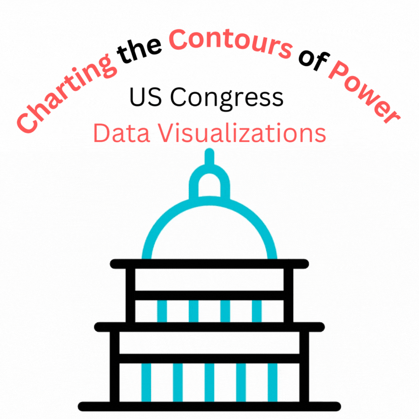

I am Disty
aspiring art historian
using digital media
About
I am a senior pursuing a dual degree in Arts and Media at Duke University and Duke Kunshan University. Having lived in Indonesia, Saudi Arabia, the United States, North Macedonia, and China, I developed a deep interest in different cultures, history and people's stories. I am pursuing this interest through art history and incorprorating my studies with digital media.
View My CVInterests
- Art History and Digital Art History
- Cultural Heritage
- Public History
- Memory Studies
- Digital Humanities
Recent Experiences
Duke University Rhodes Information Initiative
Research Assistant
May - July 2025
Performed a computational humanities study on Asian American literature (1974-2024) using NLP and data visualization.
Duke University Digital Art History & Visual Culture Research Lab
Research Intern
September - December 2024
Supported the creation of a late 19th-century Durham and Duke exhibit through archival research and design feedback for the wall timeline.
Education
Duke University
Bachelor's of Arts
Expected May 2026
Interdisciplinary Studies; Arts and Media; Arts track
Duke Kunshan University
Bachelor's of Arts
Expected May 2026
Arts and Media major; Arts track; Digital Cultures and Communication concentration
Recent Works
Here are some of my favorite projects I have done lately:
-
Interactive ArchiveBlack Arts Movement: The Living Room
-
 Digital Essay + WebsiteHuzn (حزن) and Recitation
Digital Essay + WebsiteHuzn (حزن) and Recitation -
Omeka ExhibitIndonesian Art in the New Order Era
-
 Historical Narrative GameJourney of Hue Palace's Maiden (Hành Trình Người Cung Nữ)
Historical Narrative GameJourney of Hue Palace's Maiden (Hành Trình Người Cung Nữ) -
3D ModelingChildren of Enlil
-
Data Visualizations + WebsiteCharting the Contours of Power
Black Arts Movement: The Living Room
Poetry, songs, and musicians of the Black Arts Movement that incoporated Islamic aesthetics and references into their works. I explored the different mediums and how they were consumed by drawing and creating a 1960s-70s living room environment. The interactable objects include books for the poetry, radio for music, and a television that displayed famous Jazz player, John Coltrane during two of his live performances.
Created for the course, "Islamic Media", taught by Professor Ellen McLarney at Duke University, Fall 2024.
- Unity
- Immersive Environment
- Poetry
- Jazz
- Black Liberation Movement
- Islam
Huzn حزن
I explored the idea of huzn, how its concept is found in Qur'an and recitation, and the impacts it has on the listeners. I pulled literature from various Muslim thinkers and scholars of Islamic studies to better understand the impacts that huzn has on the Islamic community to collate into a website.
Image is Sépulcre Arc-en-Barrois by Vassil from Wikimedia
- Website
- Islamic Studies
- Essay
Indonesian Art during the New Order Era
I created an Omeka site and two exhibits, one focusing on Chinese-Indonesian Artists and their works as a method of resistance, and the other on the Gerakan Seni Rupa Baru (GSRB) or the New Art Movement.
Archival Theories
My reasoning for creation of the exhibits on the GSRB and Chinese-Indonesian artists were based on the archival theory proposed by Cameroonian historian, Achille Mbembe. In “The Power and Limits of Archives” he writes, “…the archives becomes something that does away with doubt…It is proof that a life truly existed, that something actually happened” (20-21). I was informed by this theory of the archive being a symbol of power and threat to state narratives by being able to tell a part of a story.
I was also informed by the idea of “records” written by Micheal Caswell. In his work, "The Archive" is not an Archives: Acknowledging the Intellectual Contributions of Archival Studies, he referenced Archivist Brian Brothman’s argument that, “records and evidence are cleaved by a sense of temporality that cannot be fixed... In this light, evidence is always contextual, always of something for someone...”. This was especially true for the artworks from the Chinese-Indonesian artists who did not overtly go against government restrictions. However, by looking at the scholarship and literature, their works were still able to be analyzed in subtle ways in resistance and how it informs the broader conversation of ethnic relationships both back then and now.
- Omeka
- Indonesian History
- Art History
- New Order Era
Journey of Hue Palace's Maiden
I was a game designer for Heritagear, a project under Duke Kunshan's Innovation Incubator. It aimed to create an immersive historical fiction storyline for visitors at the Imperial City of Huế in Vietnam.
Main Mission
The main mission features the user tasked with making Phan Nu, a traditional cosmetic. I created the initial flow of the game based on videos of how real life phan nu was made. I utilized simple tap and timing mechanics throughout the main mission to help fit the theme of the creation of phan nu and make the game system not too difficult. It was important to make the game as accessible for a wide variety of audiences that come to the Imperial City.
Extra Mission #1: Making Tea
Extra mission one focuses on creating traditional tea. It features more dialogue for the users to get to know other characters and get to know the world better. The game mechanics are drag, tap, timing, and progress bar.
Extra Mission #2: Old Buddhism Tales
Extra mission two has the players investigate through a collection of stories and choose the correct one for the Queen Mother based on hints given to them.
Extra Mission #3: Making a New Friend
Extra Mission 3 is a companion focused quest for the players to get to know a supporting NPC by cleaning the halls. The game mechanic featured is a visual novel style dialogue in which players will have different responses to choose from that influences the NPC's responses.
User Testing
December 2023, the team based in Vietnam took the prototype to the Forbidden City in Huế. Utilizing QR codes for the different missions, participants walked through the site whilst playing the prototype.


- Historical-fiction
- Vietnamese History
- Story
- Game
Children of Enlil
For the course, 3D Modeling and AnimationAs a 3 student group project, we built a mini 3D fantasy world environment scene. The city, Enlil, is inspired by Sumerian mythology and architecture. The city was once a flourishing land, blessed by the God, Enlil. However, tragedy struck and the city now remains a desolate wasteland, with a dragon watching over the land on top of the city's Ziggurat.
The modeling was done in Blender, with the exception of the city's statues and dragon done on ZBrush. Inspiration came loosely from Sumerian art and culture. Texture was obtained through Polyhaven, Polligon, and BlenderKit (a Blender plug-in).
- 3D Modeling
- Blender
- Mesopotamian
- Mythology
- Fantasy
- Art
Charting the Contours of Power
For my group final in my course, Data Visualizations and Information Aesthetic, my partner and I created 6 different types of visualizations to showcase a dataset on the demographics of the US congress over time. Each visualization includes at least two user interactions. We utlized both Python packages and online visualization software to clean and create these visualizations. The end result was a poster showcase and a website to serve as a visualization dashboard.
Why Congress?
We focused on the evolutions of the demographics of the US Congress to visualize if and in what ways has the seats of Congress changed in regards to race, gender, and age. As factors such as these are historically used for discrimination, we wondered if the changing political landscape and powers reflected that of the US population. Our main research question was: How has the demographics and representation of Congress representatives evolved over time?
The Dataset
The dataset was gathered from Harvard's Dataverse. It can be found
here
.
The dataset was cleaned using Python Pandas to omit irrelevant data, handle missing values, and create calculated fields needed for some visualizations. The final dataset consists of 9411 instances and 46 attributes. A statistical analysis was also done to ensure validity in our research questions, such as t-tests using Python SciPy Stats.
- Branding
- Data visualization
- Information aesthetics
- Tableau
- Python
- QGIS
- Florish
Get In Touch
Whether you have a question, want to collaborate, or want to chat — send me a message.